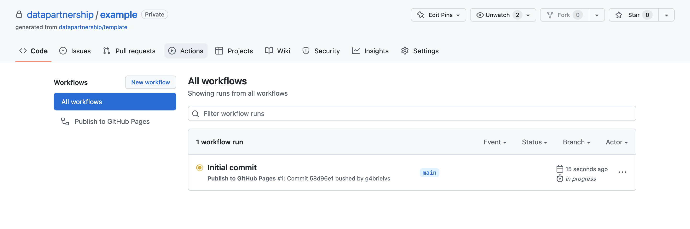
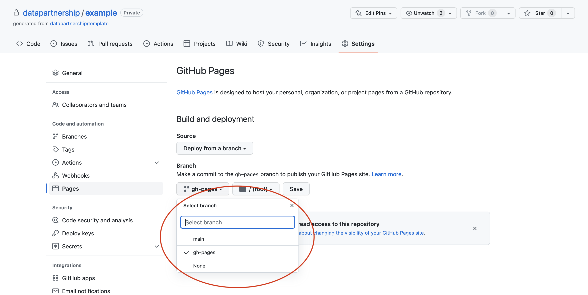

README files are important and often neglected. The files should inform anyone about about the first steps to use, learn and contribute to your project.
LICENSE
The LICENSE is a document that determines what others can and cannot do with contents of the repository. If no license is present, no one has permission to use and/or modify your code.
GitHub allows to customize how issues and pull requests are presented to the public. Custom templates encourage collaboration and maintainability.
docs/
Documentation is often never priotized until last minute. The template aims to revert the malpractice by setting up the documentation as an integral part of the code repository. With the power of Jupyter Book, data practioners have a way to share Jupyter notebooks on GitHub Pages in a standardized and effortless way.
data/
Placeholder folder for data. Data is immutable. By default, the data folder is present but ignored from version control, in order to prevent files of being mistakenly versioned in the code repository.
src/
Placeholder folder for source code. If Python, it is recommended the package is made pip-installable.
notebooks/
Placeholder folder for Jupyter notebooks. Markdown files and Jupyter notebooks can be added to docs/_toc.yml (Table of Contents) to compose the documentation.
Important
Admittedly, even the best of the templates would never be perfect; the template aims to encourage teams to start thinking and assimilate best practices, collaborative coding, documentation, reproducibility as an integral part of the project. In a standardized way.
The template is a GitHub template repository; in other words, you can generate a new GitHub repository with the same files and folders to use as the starting point for your project.
After creating the repository from the template, a Jupyter Book will be automatically built from the main branch and deployed to the gh-pages branch via GitHub Actions.

To publish the documentation, please enable GitHub Pages by going to the repository’s settings (Settings>Pages), and selecting to deploy from the gh-pages branch.

Tip
The documentation can be published from either public and private repositories. If publishing private content, please remember to carefully select the content to be made public and to abide by your organization’s Data Privacy Policy.
Update configurations
The template comes with a default docs/_config.yml Jupyter Book configuration file. Remember to update it to reflect your project’s name and details.
In case your project uses Python, it is strongly recommended distributing it as a package.
Tip
The template contains an example - the datalab Python package - and will automatically find and install any src packages as long as setup.cfg is kept up-to-date.
The template comes with README files - including this README - that should provide anyone with the information about the first steps to use, learn and contribute to your project. Please replace and/or repurpose the files with instructions and detailed information about your project.
A LICENSE is the document that guarantees the repository can be shared, modified and receive contributions. Otherwise, if no license is present, all rights are reserved. The template is licensed under the World Bank Master Community License Agreement; if necessary, choose a different license for your project.
The template is created as a Jupyter Book - an open-source project to build beautiful, publication-quality books and documents from computational content. Let’s see below how to add, execute and publish new content for your project.
The next step is ensure your code is maintainable, realiable and reproducible by including
any dependencies and requirements, such as packages, configurations, secrets (template) and addtional instructions.
The template uses conda as environment manager and, as conventional, the environment is controlled by the environment.yml file.
The environment.yml file is where you specify any packages available on the Anaconda repository as well as from the Anaconda Cloud (including conda-forge) to install for your project. Ensure to include the pinned version of packages required by your project (including by Jupyter notebooks).
To (re)create the environment on your installation of conda via anaconda, miniconda or preferably miniforge, you only need to pass the environment.yml file, which will install requirements and guarantee that whoever uses your code has the necessary packages (and correct versions). By default, the template uses Python 3.9.
Jupyter Notebooks can be beautifully rendered and downloaded from your book. Jupyter Book will execute notebooks during the build (on GitHub) and display code outputs and interactive visualizations as part of the documentation on the fly. By default, the template will execute any files listed on the table of contents that have a notebook structure.
The template comes with a Jupyter notebook example, notebooks/world-bank-api.ipynb, to illustrate.
The template is licensed under the World Bank Master Community License Agreement. Remember to replace the license if necessary. If open source, choose an open source license.